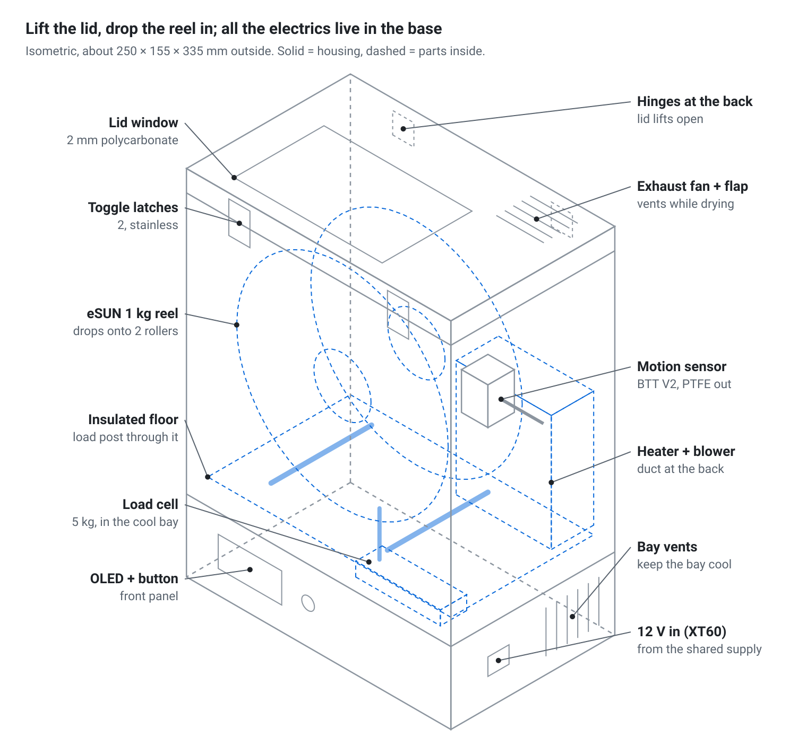
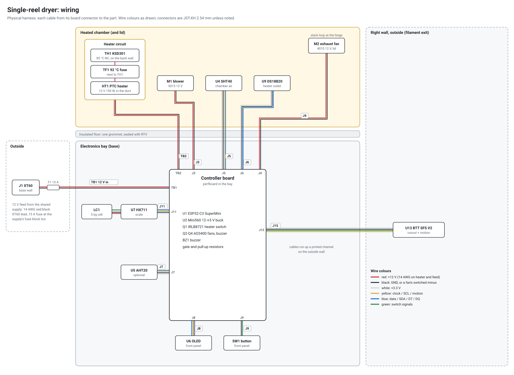

Single-Reel Filament Dryer
One top-loading, single-reel dryer box per printer, printed in ABS/ASA. The reel drops onto bearing rollers and a 12 V 150 W PTC heater holds 40-70 °C. A BIGTREETECH motion sensor at the exit checks the extruder is really pulling filament, and a JLCPCB-assembled controller board with an ESP32-C3 running ESPHome weighs the reel and reports to the Printer Control Center over Wi-Fi.
Summary
The single-reel box is the two-reel design without the second lane: no feeders, no I/O expander, one load cell. When a reel runs out, the printer pauses as it does today. It shares its heater, fans, sensors, controller and power feed with the two-reel box, so the two use the same spares.
- 12 V feed, no mains in the box. The same shared HP 1600 W server supply and XT60 lead as the two-reel box.
- Three zones: a heated chamber on top, an insulated floor, and a cool electronics bay underneath.
- Weigh the cradle, not the box. The roller cradle stands on a post through the floor to a load cell in the cool bay.
- Drop-in loading. Lift the lid, drop the reel on the rollers, feed the filament into the exit.
- Cheap, reliable fans: a 5015 dual-ball-bearing blower and a 4010 ball-bearing exhaust fan, both 12 V, straight off the feed.
- Filament motion is measured by a BIGTREETECH Smart Filament Sensor V2 at the exit (runout switch plus a pulse every 2.88 mm).
- Housing in ABS or ASA only. PLA and PETG creep at 65 °C.
Architecture

Housing
| Dimension | Value | Why |
|---|---|---|
| Chamber inside (L × W × H) | 230 × 135 × 235 mm | Ø200 reel + 15 mm clearance; 95 mm for the reel and a 40 mm heater duct at the back |
| Electronics bay inside height | 60 mm | Controller board, load cell |
| Outside | 250 × 155 × 335 mm | 4 mm walls + 6 mm insulation; the motion sensor sits on the right wall |
| Roller centres | 110 mm apart, 25 mm above the floor | Reel sits stable with about 35° contact angle each side |
| Roller length | 95 mm | Any reel 50-90 mm wide |


Roller cradle. Two rollers, each a printed ABS sleeve (30 mm OD) with a 608ZZ bearing pressed into each end, turning on a fixed M8 stainless bolt. A printed front lip stops the reel walking off.
Weighing path. The cradle stands on a Ø16 mm ABS post through a 24 mm hole in the insulated floor to the free end of a 5 kg load cell. A skirt on the cradle overlaps a collar round the hole without touching it, and printed hard stops protect the cell from a dropped reel.
Filament path. The filament leaves through a PC4-M10 bulkhead high in the right wall, straight into the BTT motion sensor in a small printed holder, then one 2 × 4 mm PTFE tube runs to the printer.
Lid, insulation, desiccant. Hinged lid with two stainless toggle latches and a silicone D-seal; 6 mm foil-faced NBR foam on the walls; a snap-in cassette with about 150 g of indicating silica gel.
Printed parts
| Part | Qty | Approx. filament | Printer | Notes |
|---|---|---|---|---|
| Chamber tub | 1 | 380 g | K2 Plus | Too big for the K1C bed |
| Lid (+ window frame) | 1 | 140 g | K2 Plus | Hinge knuckles and latch mounts |
| Base / electronics bay | 1 | 200 g | K2 Plus | Vents, front panel, XT60 cut-out |
| Insulated floor plate | 1 | 60 g | K1C | Collar for the load post |
| Roller cradle | 1 | 60 g | K1C | Holds both M8 axles |
| Roller sleeves | 2 | 15 g each | K1C | 608ZZ pressed into both ends |
| Load post + mount block | 1 set | 25 g | K1C | Print the post solid |
| Heater duct + blower mount | 1 | 40 g | K1C | At least 15 mm between ABS and the PTC fins |
| Desiccant cassette | 1 | 30 g | K1C | Perforated face |
| Motion sensor holder | 1 | 20 g | K1C | Bolts to the right wall at the exit |
| Electronics tray + front panel | 1 | 40 g | K1C | Controller board, OLED, button |
Heating, humidity and safety
Same as the two-reel box: a PID loop drives the 12 V 150 W PTC heater (the same part, so one spare covers both versions; in the smaller chamber the PID simply runs it less). The 5015 blower pushes chamber air through the heater, and the 4010 fan vents moist air through a gravity flap while drying.
| Mode | Heater | Vent fan | Ends when |
|---|---|---|---|
| Dry | Material preset | 10 s every minute for the first hour, then every 5 min | Preset time is up, or humidity below 15% for 30 min after the minimum time; then Keep dry |
| Keep dry | Off; desiccant does the work | Off, flap shut | Humidity above 25% for 15 min starts a short 45 °C dry |
| Feed temperature (PLA 40 °C, others 45-50 °C) | Off | The linked printer stops printing (+30 min) |
Safety chain: firmware cut-outs (chamber over setpoint + 8 °C or 75 °C, heater outlet over 100 °C, missing sensor, no temperature rise, 24 h limit), a KSD301 85 °C 16 A thermostat and a 92 °C 15 A thermal fuse in series with the heater, a self-limiting PTC, and a 15 A fuse on the box's 12 V input.
Weighing and motion
grams_left = cradle_g − empty_reel_g
metres_left = grams_left / (density_g_per_cm3 × 2.405)
Calibrate once: tare the empty cradle, put the 500 g calibration weight on and enter its grams, then save an empty eSUN 1 kg reel as a reel profile. The BTT sensor adds the length of filament actually pulled through, so the control center can compare it with what Klipper extruded.
Power: 12 V feed
- Load: heater 12.5 A, fans about 0.4 A, electronics about 0.15 A: about 13.5 A peak.
- Connector and fusing: XT60, a 15 A fuse per box at the shared supply's fuse block and another inside the box; 14 AWG leads up to 3 m.
- Inside the box: the controller board takes the 12 V feed and makes its own 5 V and 3.3 V.
Electronics and pin map

Every part is assembled by JLCPCB, so nothing plugs into the board but the harness. A USB-C port (data only: plug in the 12 V feed while flashing) loads the first firmware; updates after that go over Wi-Fi. The load cell's own four leads crimp straight into J11. On this board the BTT runout switch, the button and the buzzer go through the MCP23017.
| GPIO | Use | Notes |
|---|---|---|
| 0 | HX711 SCK (U7) | |
| 1 | HX711 DOUT (U7) | |
| 2 | DS18B20 1-wire | Strapping pin; the 4.7 kΩ pull-up keeps it high at boot |
| 3, 10, 20 | Unused on the 1-roll | Second scale and feeder STEP lines, not fitted |
| 4 | Heater gate driver input (UCC27517) | 10 kΩ pull-down: heater off while booting |
| 5 | Blower MOSFET gate | 100 Ω series + 10 kΩ pull-down: off while booting |
| 6 | Exhaust fan MOSFET gate | Same as GPIO 5 |
| 7 | I2C SCL | SHT40, AHT20, OLED, MCP23017 |
| 8 | I2C SDA | Strapping pin; the I2C pull-up keeps it high |
| 9 | BOOT button | 10 kΩ pull-up; not used by the firmware |
| 18, 19 | USB D−, D+ | USB-C for flashing and logs |
| 21 | BTT motion output | Through 1 kΩ, because the boot log comes out here; ESPHome counts the pulses |
| MCP23017 | Use | Notes |
|---|---|---|
| GPA2 | Runout switch of the BTT SFS V2 | Internal pull-up |
| GPA3 | Push button | Internal pull-up |
| GPA4 | Buzzer (through an AO3400A) | |
| GPA0, GPA1, GPA5, GPA6 | Unused on the 1-roll | Lane sensors and feeder EN/DIR |
Wiring
The physical harness: every cable from its connector on the controller board to the part, with wire colours and gauges. Use one colour per job throughout (the 6-colour 22 AWG silicone set covers it), so a cable can be traced at a glance. Crimp JST-XH 2.54 mm connectors on every cable that goes to a sensor, fan or motor, so parts can be swapped without soldering.

| Connector | Type, wire | Pins | Goes to | Where | Notes |
|---|---|---|---|---|---|
| TB1 12 V in | screw terminal, 2-way 14 AWG | 1: +12V (from F1) red 2: GND black | XT60 J1 on the base, through inline fuse F1 15 A | base wall | |
| TB2 Heater | screw terminal, 2-way 14 AWG | 1: +12V out → TH1 → TF1 → HT1 red 2: HEATER− (Q1 drain) black | PTC heater HT1, with TH1 KSD301 and TF1 92 °C in series on the red wire | chamber | TH1 and TF1 sit high on the back wall in the chamber air |
| J3 Blower | JST-XH 2 22 AWG | 1: +12V red 2: FAN− (Q2 drain) black | 5015 blower M1 | chamber, heater duct | The fan's black lead goes to the MOSFET, not GND |
| J4 Exhaust fan | JST-XH 2 22 AWG | 1: +12V red 2: FAN− (Q3 drain) black | 4010 fan M2 in the lid | lid | Leave a slack loop at the hinge |
| J5 SHT40 | JST-XH 4 22 AWG | 1: +3V3 white 2: GND black 3: SCL yellow 4: SDA blue | SHT40 U4 | chamber | |
| J6 DS18B20 | JST-XH 3 22 AWG | 1: +3V3 white 2: GND black 3: DQ blue | DS18B20 probe U9 at the heater outlet | chamber | The probe's own leads are red/black/yellow; splice to the harness colours |
| J7 AHT20 (optional) | JST-XH 4 22 AWG | 1: +3V3 white 2: GND black 3: SCL yellow 4: SDA blue | AHT20 U5 | bay | |
| J8 OLED | JST-XH 4 22 AWG | 1: +3V3 white 2: GND black 3: SCL yellow 4: SDA blue | SH1106 OLED U6 | front panel | |
| J9 Button | JST-XH 2 22 AWG | 1: BTN green 2: GND black | Push button SW1 | front panel | |
| J11 Load cell A | JST-XH 4 the cell's leads | 1: E+ red 2: E− black 3: A− white 4: A+ green | Load cell LC1 (its HX711, U7, is on the board) | bay | Crimp the cell's own four leads straight into the housing |
| J15 Motion sensor | JST-XH 4 22 AWG | 1: +3V3 white 2: GND black 3: RUNOUT green 4: MOTION yellow | BTT Smart Filament Sensor V2 U13 | pod / exit | Confirm the BTT pin order with a multimeter while turning the wheel |
Parts catalog
About US$182 per box, plus about US$30 once for the shared supply's wiring (not needed again if the two-reel boxes already use it). Prices are approximate; search terms are what to type into AliExpress. Also available as bom.csv.
Control electronics (≈ US$26)
| Part | Qty | AliExpress search | ≈ US$ | Why this one |
|---|---|---|---|---|
| Controller board (JLCPCB, assembled) | 1 | (JLCPCB order: pcb/jlcpcb/bom-1-roll.csv) | 22 | ESP32-C3 module, MCP23017, HX711, 5 V buck, heater and fan switches, buzzer: all assembled |
| OLED display (optional) | 1 | 1.3 inch SH1106 OLED I2C | 3 | Local status |
| Push button | 1 | 12mm momentary panel push button | 0.5 | Short press cycles mode, long press tares |
Sensors (≈ US$32)
| Part | Qty | AliExpress search | ≈ US$ | Why this one |
|---|---|---|---|---|
| Chamber temperature + humidity | 1 (buy 2) | SHT40 module I2C | 6 | Rated to 125 C, stable in hot damp air |
| Bay temperature + humidity (optional) | 1 | AHT20 module | 1.5 | Different I2C address from the SHT40 |
| Heater outlet probe | 1 | DS18B20 stainless probe silicone cable | 2 | Silicone cable version for heat |
| Load cell | 1 | YZC-131 5kg load cell | 5 | Named-maker single-point cell |
| Motion + runout sensor | 1 | BIGTREETECH Smart Filament Sensor V2 | 13 | At the filament exit: runout switch plus a pulse every 2.88 mm of filament movement; runs on 3.3 V |
| Calibration weight | 1 | calibration weight 500g | 5 | Accurate scale setup |
Heating and air (≈ US$30)
| Part | Qty | AliExpress search | ≈ US$ | Why this one |
|---|---|---|---|---|
| PTC air heater | 1 (buy 2) | PTC heater 12V 150W insulated aluminium | 10 | Same heater as the 2-roll box, so one spare covers both; the PID limits it |
| Blower | 1 (buy 2) | 5015 blower 12V dual ball bearing | 7 | Cheap; ball bearings outlast sleeve bearings in heat. Gdstime and Winsinn are common, reliable makes |
| Exhaust fan | 1 (buy 2) | 4010 fan 12V dual ball bearing | 5 | Vents while drying |
| Bimetal thermostat | 2 | KSD301 85 normally closed 16A | 1.5 | Auto-reset hardware cut-out |
| Thermal fuse | 10-pack | thermal fuse 92C 15A | 1.5 | One-shot last-resort cut-out |
| Aluminium sheet | 1 | aluminium sheet 1mm 100x200 | 3 | Heater channel and heat shield |
| Inline blade fuse holder + fuses | 1 | mini blade fuse holder 14AWG | 2 | 15 A on the box's 12 V input |
Power (≈ US$37)
| Part | Qty | AliExpress search | ≈ US$ | Why this one |
|---|---|---|---|---|
| Shared: server supply breakout board | 1 | HP 1200W 1600W server power supply breakout board | 10 | Switches the supply on, screw terminals for 12 V |
| Shared: fuse block | 1 | 12 way blade fuse box with negative bus | 10 | One 15 A fuse per box, room for all seven |
| Shared: trunk cable | 1 m red + 1 m black | 6AWG silicone wire | 10 | Supply to fuse block, up to about 95 A |
| Per box: power connector | 1 pair | XT60 panel mount | 2 | Rated far above 13 A, keyed |
| Per box: supply lead | up to 3 m red + black | 14AWG silicone wire | 5 | About 0.6 V drop at 13 A over 3 m |
Wiring and connectors (≈ US$26)
| Part | Qty | AliExpress search | ≈ US$ | Why this one |
|---|---|---|---|---|
| Heater-path wire | 2 m red + 2 m black | 14AWG silicone wire | 4 | Silicone insulation, rated to 200 C |
| Signal wire | set | 22AWG silicone wire 6 colours | 5 | Sensors, fans, steppers |
| Lever connectors | set | WAGO 221 | 4 | Get the genuine ones |
| Ferrules + crimper | kit | ferrule crimping tool kit | 5 | Reliable screw-terminal joints |
| JST-XH connectors | kit | JST XH 2.54 kit with crimper | 5 | Unpluggable sensors, fans and steppers |
| Heat-shrink | set | heat shrink tube kit | 3 |
Mechanical and consumables (≈ US$61)
| Part | Qty | AliExpress search | ≈ US$ | Why this one |
|---|---|---|---|---|
| Bearings | 4 (pack of 10) | 608ZZ bearing NSK or 608ZZ C&U | 6 | Steel shields, grease rated about -20 to +120 C |
| Roller axles | 2 + nuts | M8 x 120 stainless A2 hex bolt + nyloc | 3 | No rust in a humid box |
| Lid hinges | 2 | stainless steel hinge 40mm | 3 | |
| Lid latches | 2 | mini stainless toggle latch | 4 | Positive seal; magnets weaken when hot |
| Lid gasket | 3 m | silicone D seal strip self adhesive | 4 | Stays soft at 70 C |
| Filament fittings | 4 | PC4-M10 pneumatic coupler bulkhead | 3 | Exit, sensor and printer end |
| PTFE tube | 2 m | PTFE tube 2x4mm | 4 | Box to printer |
| Insulation | 0.5 m2 | NBR rubber foam aluminium foil self adhesive 6mm | 8 | Rated to about 105 C |
| Heat-set inserts | 100 | M3 brass heat set insert | 4 | Screws that can be undone many times |
| Screws | kit | M3 stainless socket screw kit | 6 | |
| Load-cell screws | 4 | M4 / M5 stainless (match your cells' threads) | 2 | |
| Feet | 4 | rubber feet adhesive | 1 | |
| Desiccant | 500 g | orange indicating silica gel | 5 | Changes colour when spent |
| High-temp silicone | 1 tube | high temperature RTV silicone red | 4 | Seal cable holes through the floor |
| Window (optional) | 1 | polycarbonate sheet 2mm | 4 | Not acrylic |
Firmware and control center
ESPHome on the box; the Printer Control Center links the box to its printer and shows the reel on that printer's card. The safety rules run on the ESP32 itself.
| Rule | When | Alert |
|---|---|---|
| Filament not moving | Printing, and Klipper's filament_used rises 15 mm or more while the BTT sensor measures no movement | Pause + critical push (clog, jam, tangle or stuck reel end) |
| Not enough filament | The file needs more than the reel holds, + 5% | Warning push |
| Running out | Reel under 30 g | Warning with the estimated time |
| Runout | The printer reports a runout | The existing runout reminders |
| Desiccant spent | Keep dry and humidity above 30% for 1 h | Warning |
| Dryer fault | Any firmware safety cut-out | Critical push |
| Print mode | Linked printer starts printing | No push; Print mode until 30 min after the print |
Build plan
- Order parts; meanwhile measure a real eSUN reel and finish the CAD.
- Bench electronics: the assembled board with the load cell, SHT40 and BTT sensor on ESPHome; calibrate and check overnight drift.
- Heater test in the open: PID holds, firmware cut-outs trip, the KSD301 opens at about 85 °C.
- Print and assemble; then a 12 h soak at 70 °C.
- Control center integration and a watched test print.
- Reaches 65 °C from 25 °C in under 30 min, lid closed
- Holds setpoint within ±2 °C; unplugging the blower or the SHT40 cuts the heater
- Weight within ±2 g of a kitchen scale; drift under 3 g over 12 h at 70 °C
- Pinching the filament above the extruder raises "filament not moving" within 30 s
- Housing shows no warping after the 12 h soak